O3 Benchmark
Table of Contents
1. O3 Benchmark
问题:
- cpu O3 (out of order) 对性能的影响
- gcc scheduler 对性能的影响
- gcc branch prediction 对性能的影响
1.1. gem5
gem5 是一个 cycle accurate 的 simulator, 它支持 X86, ARM, RISC-V 等 ISA, 并实现了几个不同的 cpu 模型, 例如 MinorCPU 是一个 in-oder 的 CPU, O3CPU 是一个 out of order 的 CPU, 同时可以用 python 脚本灵活的配置所有的东西, 后面会使用 gem5 做 benchmark.
1.2. gcc scheduler
int main(int argc, char *argv[]) { float x = 0.1; float z = x * x; int a = 1; int b = a + a; return 0; }
$> riscv64-linux-gnu-gcc test.c -O0 -g -c -o test_0.o $> riscv64-linux-gnu-objdump -d test_0.o 0000000000000000 <main>: ... 18: 0007a787 flw fa5,0(a5) # 10 <main+0x10> 1c: fef42027 fsw fa5,-32(s0) 20: fe042787 flw fa5,-32(s0) 24: 10f7f7d3 fmul.s fa5,fa5,fa5 28: fef42227 fsw fa5,-28(s0) 2c: 4785 li a5,1 2e: fef42423 sw a5,-24(s0) 32: fe842783 lw a5,-24(s0) 36: 0017979b slliw a5,a5,0x1 3a: fef42623 sw a5,-20(s0) ... # 大部分 `-fxxx` 包括 -fschedule-insns, -fschedule-insns2 在 `-O0` 并不起作用, # 因为 pass 的 gate 函数通常要求优化级别不是 `-O0`, 所以需要用 # `-fenable-rtl-sched1` 直接 enable 这个 pass $> riscv64-linux-gnu-gcc test.c -O0 -g -c -fenable-rtl-sched1 -fenable-rtl-sched2 -o test_1.o $> riscv64-linux-gnu-objdump -d test_1.o 0000000000000000 <main>: ... e: 0007a787 flw fa5,0(a5) # 6 <main+0x6> 12: 4785 li a5,1 14: fef42423 sw a5,-24(s0) 18: fef42027 fsw fa5,-32(s0) 1c: fe042787 flw fa5,-32(s0) 20: fe842783 lw a5,-24(s0) # a5 的 load 被提前了 24: 872a mv a4,a0 26: 10f7f7d3 fmul.s fa5,fa5,fa5 2a: 0017979b slliw a5,a5,0x1 ...
gcc scheduler 默认在 `-O2` 时会打开, 但有些 arch 例外, 例如 i386 会在所有优化级别上默认关闭 scheduler, 因为 schedule 会造成寄存器压力. 例如:
lw a0, 0(x) add a0, a0, 1 sw a0, 0(x) lw a0, 0(y) add a0, a0, 1 sw a0, 0(y)
原始代码只使用 a0 一个寄存器即可, schedule 后可能会变成:
lw a0, 0(x) lw a1, 0(y) add a0, a0, 1 add a1, a1, 1 sw a0, 0(x) sw a1, 0(y)
另外, sched1 发生在 RA (register allocation) 之前, sched2 发生在 RA 之后. gcc 在 RA 前后各进行一次 schedule, 是因为 scheduler 和 RA 会互相影响 (Survey on Combinatorial Register Allocation and Instruction Scheduling). 总的来说, scheduler 为了并行会倾向于使用更多的寄存器, 给 RA 造成压力. 而 RA 倾向于使用更少的寄存器, 会产生 false data dependencies. 例如:
RA 之前: -------- lw $V0, x addi $V0, $V0, 1 sw $V0, x lw $V1, y addi $V1, $V1, 1 sw $V1, y RA 之后: -------- lw $a0, x addi $a0, $a0, 1 sw $a0, x // sw $a0 和 lw $a0 因为 $a0 产生依赖 lw $a0, y addi $a0, $a0, 1 sw $a0, y
1.4. benchmark
https://github.com/sunwayforever/code/tree/master/hello_world/hello_benchmark
- 从 llvm-test-suite 中选择了几个 benchmark, 例如 Bubblesort, Treesort, Dhrystone, Linkpack 等
- 针对 X86, RISC-V, ARM 编译不同的 elf
- 使用不同的编译选项编译不同的 elf:
- default, 编译选项为 `-O0`
- sched, 编译选项为 `-O0, -fenable-rtl-sched1, -fenable-rtl-sched2`
- profile, 在 sched 基础上加入了基于 profile 的分支预测
- 每个 elf 都使用 gem5 的 MinorCPU 和 O3CPU 测试
所以每个 benchmark 需要跑 18 (3*3*2) 个测试.
测试结果:
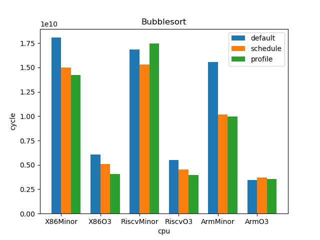 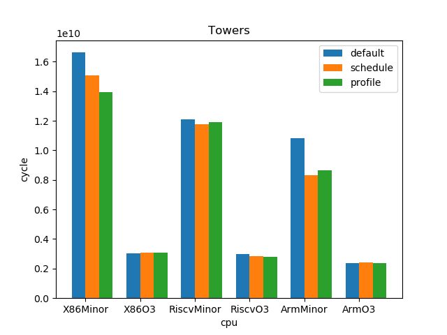 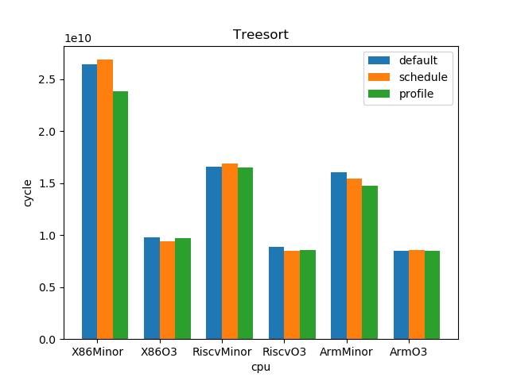 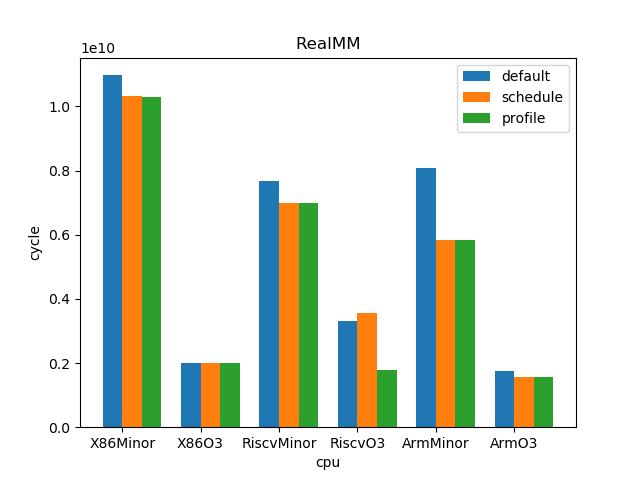 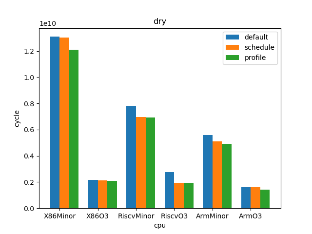 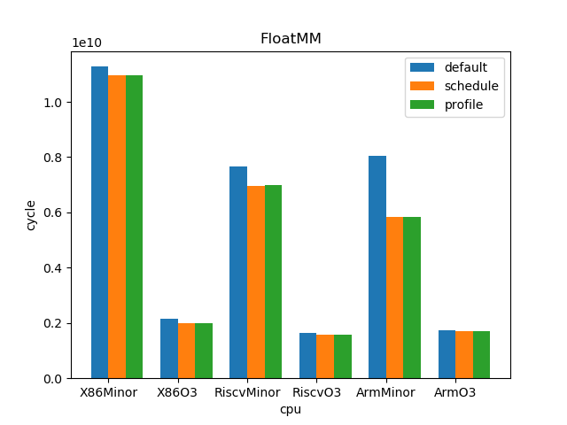 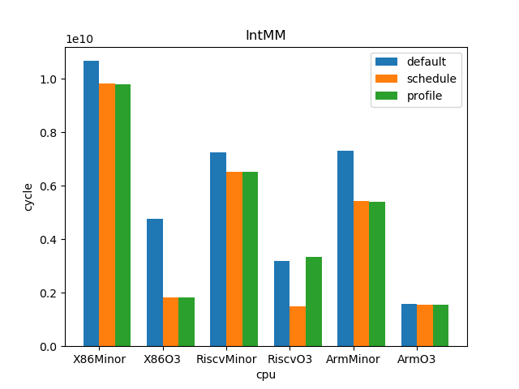 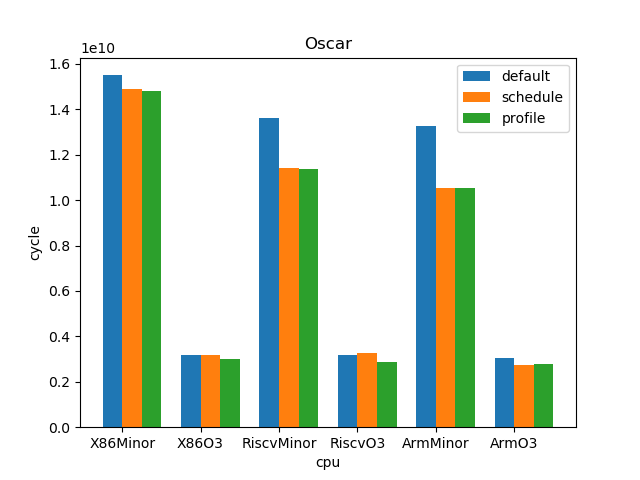 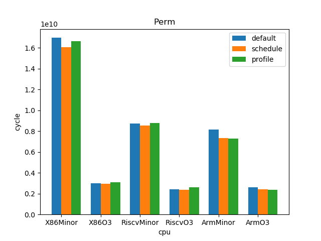 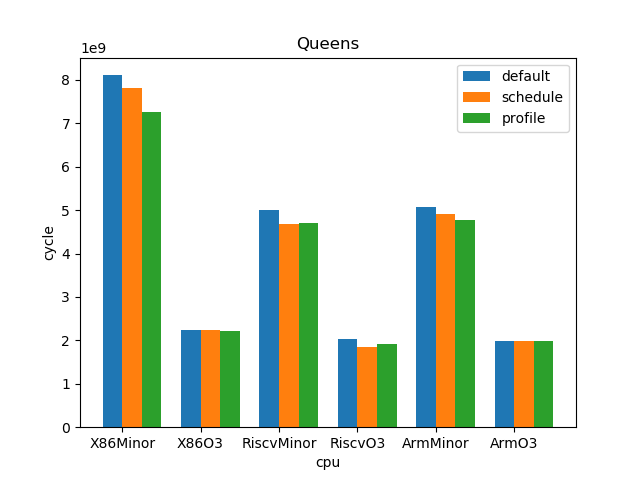 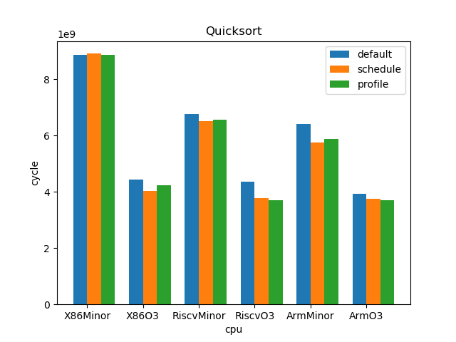 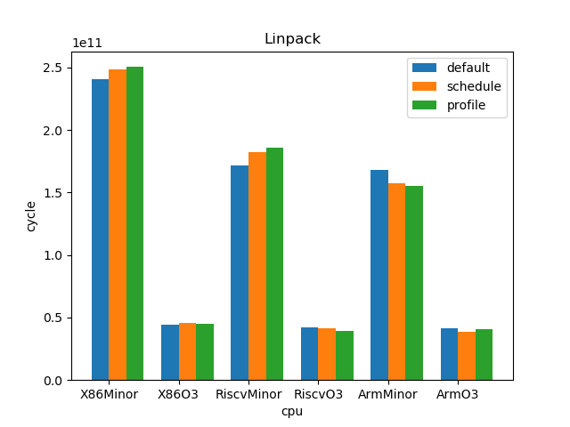
1.5. 结论
sched : min: 0.928, max: 2.61, mean: 1.12, median: 1.05 profile: min: 0.45, max: 2.01, mean: 1.02, median: 1.0 o3 : min: 1.53, max: 6.11, mean: 3.65, median: 3.59
- O3CPU 性能远好了 MinorCPU (平均 3.65 倍性能提升)
- gcc scheduler 针对 MinorCPU 和 O3CPU 基本都有提升 (平均 1.12 倍)
- gcc branch prediction 效果不大